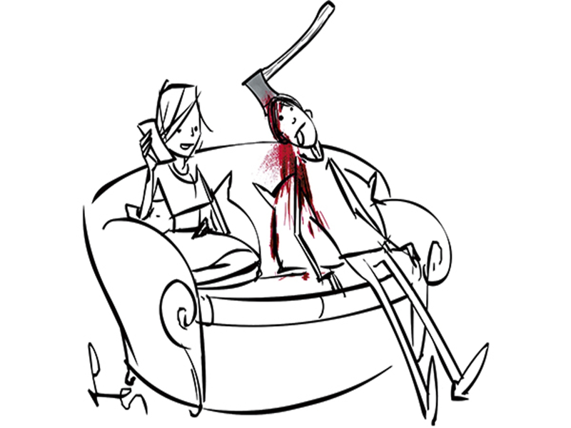
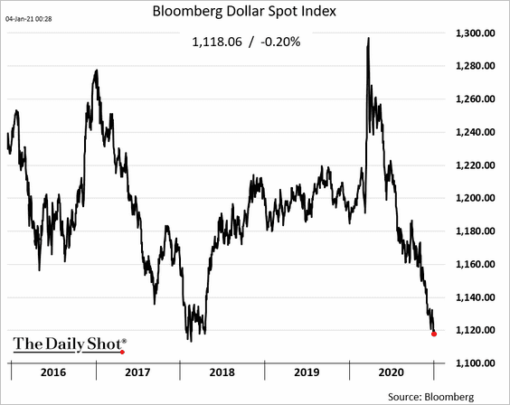
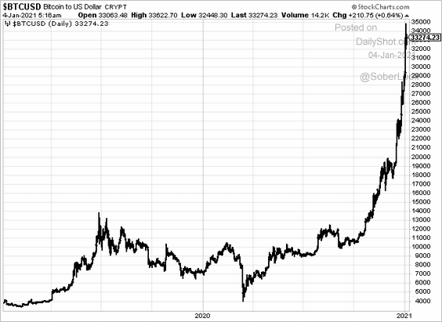
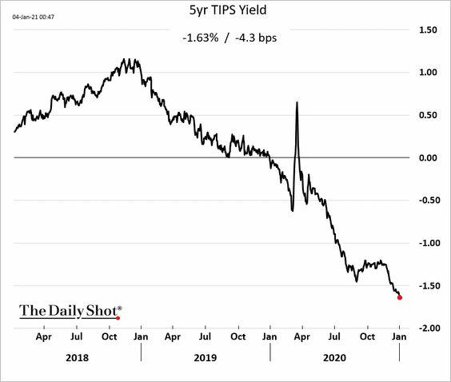
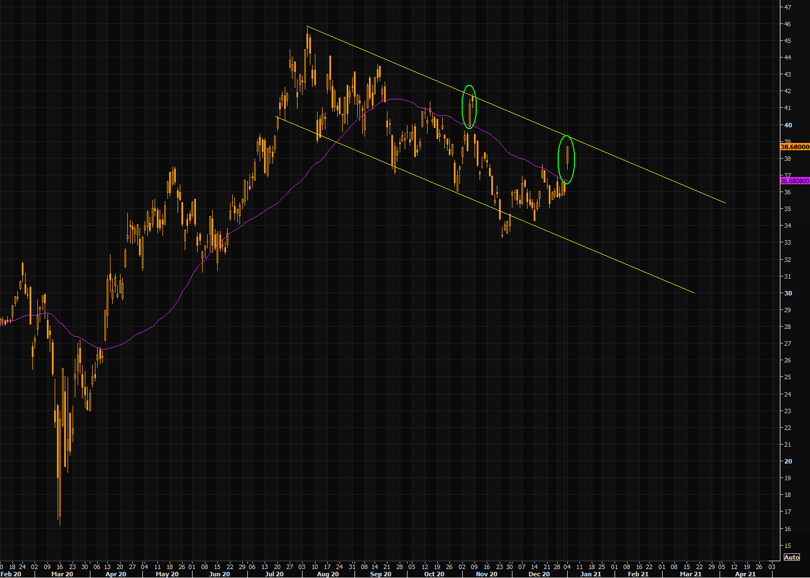

 ‘Lockdown hasn’t been all bad — it’s made me focus on what I really want out of life.’
Crumbs
The Daily Shot today has some lovely charts.
- DXY is testing levels it last reached at the start of 2018: 
- bitcoin is blasting into space:

- TIPS investors see inflation coming:  (Alex Manzara has also commented on this here.)
In other publications:
-
natural gas must start going up soon! Says HFIR Energy
-
Gold Miners look good: 
Wrap
The Senate runoff elections in GA will determine whether or not Biden’s progressive policies will be blocked by Mitch McConnell, the Nosferatu of the Senate. If the Democrats manage to take both seats from the incumbents, we’re much more likely to see progressive, fiscally relaxed, policy being passed into law, and with it a much increased chance of inflation.
Today was solidly risk on:
- equities up, with the exception of a few EU markets,
- all equity sectors up, especially energy,
- value and small cap outperforming growth,
- Canadian and UK longer dated yields up significantly,
- nearly all IPOs are above their issue price (a notable exception is Casper Sleep: a mattress seller),
- USD looking weak again, especially against commodity currencies AUD and CAD (fairly flat against EUR),
- The vast majority of major currencies now have policy rates of 0.25% or less (policy rate: e.g. Fed Funds, discount rate etc., I know these are variously implemented),
- virtually all commodities are up. NG is up 6.5%!
- all govt. bonds are down, yields up. $TLT (20yr + ETF) is down 0.84% this month alone,
Thoughts
In the UK, the Conservative govt. has always maintained the position that, in one of the few memorable words of Mrs May, “There is no magic money tree.” The truth is, of course, that there is. And its fruit has been abundant, easily enough to cover the cost of shutting down the economy, without any signs of a sterling crisis or material impact on gilt yields. Young people want money, to pay for their education (especially ‘Uni’), free stuff, like healthcare, and carbon emission reduction. Politicians want their votes, and now that both they and the voters have realized that you can have the penny and the bun, they want the voters to have more buns.
Actions have consequences. Fortunately, in politics these come with (usually) long and variable lags. The Covid crisis has demonstrated that the government can enable major shifts in behaviour, not just temporarily, but almost permanently. Banning air travel, stopping people driving their cars, making them work remotely using technology, are now things. Things that the population can be made to do, and made to continue doing. No longer will Permanent Secretaries be able to argue that any attempt to make large-scale changes to individual behaviour to fix the climate would be nice but in a free country like the UK would be simply impossible to enforce.
Maybe the conservative instincts of the Conservatives will prevent this getting too out of control, but as the principle is conceded, the pressure to do more will spiral upwards, until either all their inhibitions are cast aside, or they are replace by a Labour administration with none.
I certainly hope so, if only to know what the out turn will be.